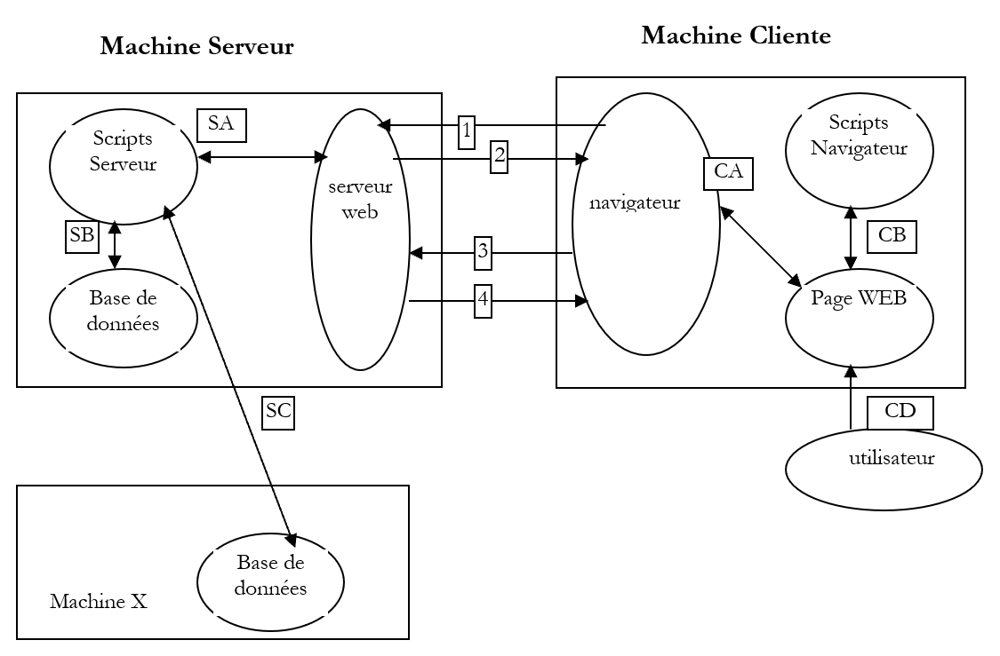
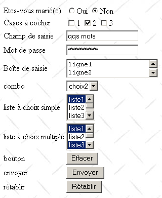
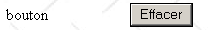

2. Les bases
Dans ce chapitre, nous présentons les bases de la programmation Web. Il a pour but essentiel de faire découvrir les grands principes de la programmation Web qui sont indépendants de la technologie particulière utilisée pour les mettre en oeuvre. Il présente de nombreux exemples qu'il est conseillé de tester afin de "s'imprégner" peu à peu de la philosophie du développement web. Les outils gratuits nécessaires à leurs tests sont présentés en fin de document dans l'annexe intitulée "Les outils du web".
2.1. Les composantes d'une application Web

|
Numéro |
Rôle |
Exemples courants |
|
OS Serveur |
Linux, Windows |
|
Serveur Web |
Apache (Linux, Windows) IIS (NT), PWS(Win9x), Cassini (Windows+plate-forme .NET) |
|
Scripts exécutés côté serveur. Ils peuvent l'être par des modules du serveur ou par des programmes externes au serveur (CGI). |
PERL (Apache, IIS, PWS) VBSCRIPT (IIS,PWS) JAVASCRIPT (IIS,PWS) PHP (Apache, IIS, PWS) JAVA (Apache, IIS, PWS) C#, VB.NET (IIS) |
|
Base de données - Celle-ci peut être sur la même machine que le programme qui l'exploite ou sur une autre via Internet. |
Oracle (Linux, Windows) MySQL (Linux, Windows) Postgres (Linux, Windows) Access (Windows) SQL Server (Windows) |
|
OS Client |
Linux, Windows |
|
Navigateur Web |
Netscape, Internet Explorer, Mozilla, Opera |
|
Scripts exécutés côté client au sein du navigateur. Ces scripts n'ont aucun accès aux disques du poste client. |
VBscript (IE) Javascript (IE, Netscape) Perlscript (IE) Applets JAVA |
2.2. Les échanges de données dans une application web avec formulaire

|
Numéro |
Rôle |
|
Le navigateur demande une URL pour la 1ère fois (http://machine/url). Auncun paramètre n'est passé. |
|
Le serveur Web lui envoie la page Web de cette URL. Elle peut être statique ou bien dynamiquement générée par un script serveur (SA) qui a pu utiliser le contenu de bases de données (SB, SC). Ici, le script détectera que l'URL a été demandée sans passage de paramètres et génèrera la page WEB initiale. Le navigateur reçoit la page et l'affiche (CA). Des scripts côté navigateur (CB) ont pu modifier la page initiale envoyée par le serveur. Ensuite par des interactions entre l'utilisateur (CD) et les scripts (CB) la page Web va être modifiée. Les formulaires vont notamment être remplis. |
|
L'utilisateur valide les données du formulaire qui doivent alors être envoyées au serveur web. Le navigateur redemande l'URL initiale ou une autre selon les cas et transmet en même temps au serveur les valeurs du formulaire. Il peut utiliser pour ce faire deux méthodes appelées GET et POST. A réception de la demande du client, le serveur déclenche le script (SA) associé à l'URL demandée, script qui va détecter les paramètres et les traiter. |
|
Le serveur délivre la page WEB construite par programme (SA, SB, SC). Cette étape est identique à l'étape 2 précédente. Les échanges se font désormais selon les étapes 2 et 3. |
2.3. Notations
Dans la suite, nous supposerons qu'un certain nombre d'outils ont été installés et adopterons les notations suivantes :
|
notation |
signification |
|
racine de l'arborescence du serveur apache |
|
racine des pages Web délivrées par Apache. C'est sous cette racine que doivent se trouver les pages Web. Ainsi l'URL http://localhost/page1.htm correspond au fichier <apache-DocumentRoot>\page1.htm. |
|
racine de l'arborescence lié à l'alias cgi-bin et où l'on peut placer des scripts CGI pour Apache. Ainsi l'URL http://localhost/cgi-bin/test1.pl correspond au fichier <apache-cgi-bin>\test1.pl. |
|
racine des pages Web délivrées par IIS, PWS ou Cassini. C'est sous cette racine que doivent se trouver les pages Web. Ainsi l'URL http://localhost/page1.htm correspond au fichier <IIS-DocumentRoot>\page1.htm. |
|
racine de l'arborescence du langage Perl. L'exécutable perl.exe se trouve en général dans <perl>\bin. |
|
racine de l'arborescence du langage PHP. L'exécutable php.exe se trouve en général dans <php>. |
|
racine de l'arborescence de java. Les exécutables liés à java se trouvent dans <java>\bin. |
|
racine du serveur Tomcat. On trouve des exemples de servlets dans <tomcat>\webapps\examples\servlets et des exemples de pages JSP dans <tomcat>\webbapps\examples\jsp |
On se reportera pour chacun de ces outils à l'annexe qui donne une aide pour leur installation.
2.4. Pages Web statiques, Pages Web dynamiques
Une page statique est représentée par un fichier HTML. Une page dynamique est, elle, générée "à la volée" par le serveur web. Nous vous proposons dans ce paragraphe divers tests avec différents serveurs web et différents langages de programmation afin de montrer l'universalité du concept web. Nous utiliserons deux serveurs web notés Apache et IIS. Si IIS est un produit commercial, il est cependant décliné en deux versions plus limitées mais gratuites :
- PWS pour les machines Win9x
- Cassini pour les machines Windows200 et XP
Le dossier <IIS-DocumentRoot> est habituellement le dossier [lecteur:\inetpub\wwwroot] où [lecteur] est le disque (C, D, ...) où a été installé IIS. Il en est de même pour PWS. Pour Cassini, le dossier <IIS-DocumentRoot> dépend de la façon dont le serveur a été lancé. Dans l'annexe, il est montré que le serveur Cassini peut être lancé dans une fenêtre Dos (ou par un raccourci) de la façon suivante :
L'application [WebServer] appelée également serveur web Cassini admet trois paramètres :
- /port : n° de port du service web. Peut-être quelconque. A par défaut la valeur 80
- /path : chemin physique d'un dossier du disque
- /vpath : dossier virtuel associé au dossier physique précédent. On prêtera attention au fait que la syntaxe n'est pas /path=chemin mais /vpath:chemin, contrairement à ce que dit le panneau d'aide ci-dessus.
Si Cassini est lancé de la façon suivante :
alors le dossier P est la racine de l'arborescence web du serveur Cassini. C'est donc ce dossier qui est désigné par <IIS-DocumentRoot>. Ainsi dans l'exemple suivant :
le serveur Cassini travaillera sur le port 80 et la racine de son arborescence <IIS-DocumentRoot> est le dossier [d:\data\devel\webmatrix]. Les pages Web à tester devront se trouver sous cette racine.
Dans la suite, chaque application web sera représentée par un unique fichier qu'on pourra construire avec n'importe quel fichier texte. Aucun IDE n'est requis.
2.4.1. Page statique HTML (HyperText Markup Language)
Considérons le code HTML suivant :
<html>
<head>
<title>essai 1 : une page statique</title>
</head>
<body>
<center>
<h1>Une page statique...</h1>
</body>
</html>
qui produit la page web suivante :
Les tests

Test1
- lancer le serveur Apache
- mettre le script essai1.html dans <apache-DocumentRoot>
- visualiser l’URL http://localhost/essai1.html avec un navigateur
- arrêter le serveur Apache
Test2
- lancer le serveur IIS/PWS/Cassini
- mettre le script essai1.html dans <IIS-DocumentRoot>
- visualiser l’URL http://localhost/essai1.html avec un navigateur
2.4.2. Une page ASP (Active Server Pages)
Le script essai2.asp :
<html>
<head>
<title>essai 1 : une page asp</title>
</head>
<body>
<center>
<h1>Une page asp générée dynamiquement par le serveur PWS</h1>
<h2>Il est <% =time %></h2>
<br>
A chaque fois que vous rafraîchissez la page, l'heure change.
</body>
</html>
produit la page web suivante :

Le test
- lancer le serveur IIS/PWS
- mettre le script essai2.asp dans <IIS-DocumentRoot>
- demander l’URL http://localhost/essai2.asp avec un navigateur
2.4.3. Un script PERL (Practical Extracting and Reporting Language)
Le script essai3.pl :
#!d:\perl\bin\perl.exe
($secondes,$minutes,$heure)=localtime(time);
print <<HTML
Content-type: text/html
<html>
<head>
<title>essai 1 : un script Perl</title>
</head>
<body>
<center>
<h1>Une page générée dynamiquement par un script Perl</h1>
<h2>Il est $heure:$minutes:$secondes</h2>
<br>
A chaque fois que vous rafraîchissez la page, l'heure change.
</body>
</html>
HTML
;
La première ligne est le chemin de l'exécutable perl.exe. Il faut l'adapter si besoin est. Une fois exécuté par un serveur Web, le script produit la page suivante :

Le test
- serveur Web : Apache
- pour information, visualisez le fichier de configuration srm.conf ou httpd.conf selon la version d'Apache dans <apache>\confs et rechercher la ligne parlant de cgi-bin afin de connaître le répertoire <apache-cgi-bin> dans lequel placer essai3.pl.
- mettre le script essai3.pl dans <apache-cgi-bin>
- demander l’url http://localhost/cgi-bin/essai3.pl
A noter qu’il faut davantage de temps pour avoir la page perl que la page asp. Ceci parce que le script Perl est exécuté par un interpréteur Perl qu’il faut charger avant qu’il puisse exécuter le script. Il ne reste pas en permanence en mémoire.
2.4.4. Un script PHP (HyperText Processor)
Le script essai4.php
<html>
<head>
<title>essai 4 : une page php</title>
</head>
<body>
<center>
<h1>Une page PHP générée dynamiquement</h1>
<h2>
<?
$maintenant=time();
echo date("j/m/y, h:i:s",$maintenant);
?>
</h2>
<br>
A chaque fois que vous rafraîchissez la page, l'heure change.
</body>
</html>
Le script précédent produit la page web suivante :

Les tests
Test1
- consulter le fichier de configuration srm.conf ou httpd.conf d'Apache dans <Apache>\confs
- pour information, vérifier les lignes de configuration de php
- lancer le serveur Apache
- mettre essai4.php dans <apache-DocumentRoot>
- demander l’URL http://localhost/essai4.php
Test2
- lancer le serveur IIS/PWS
- pour information, vérifier la configuration de PWS à propos de php
- mettre essai4.php dans <IIS-DocumentRoot>\php
- demander l'URL http://localhost/essai4.php
2.4.5. Un script JSP (Java Server Pages)
Le script heure.jsp
<% //programme Java affichant l'heure %>
<%@ page import="java.util.*" %>
<%
// code JAVA pour calculer l'heure
Calendar calendrier=Calendar.getInstance();
int heures=calendrier.get(Calendar.HOUR_OF_DAY);
int minutes=calendrier.get(Calendar.MINUTE);
int secondes=calendrier.get(Calendar.SECOND);
// heures, minutes, secondes sont des variables globales
// qui pourront être utilisées dans le code HTML
%>
<% // code HTML %>
<html>
<head>
<title>Page JSP affichant l'heure</title>
</head>
<body>
<center>
<h1>Une page JSP générée dynamiquement</h1>
<h2>Il est <%=heures%>:<%=minutes%>:<%=secondes%></h2>
<br>
<h3>A chaque fois que vous rechargez la page, l'heure change</h3>
</body>
</html>
Une fois exécuté par le serveur web, ce script produit la page suivante :

Les tests
- mettre le script heure.jsp dans <tomcat>\jakarta-tomcat\webapps\examples\jsp (Tomcat 3.x) ou dans <tomcat>\webapps\examples\jsp (Tomcat 4.x)
- lancer le serveur Tomcat
- demander l'URL http://localhost:8080/examples/jsp/heure.jsp
2.4.6. Une page ASP.NET
Le script heure1.aspx :
<html>
<head>
<title>Démo asp.net </title>
</head>
<body>
Il est <% =Date.Now.ToString("hh:mm:ss") %>
</body>
</html>
Une fois exécuté par le serveur web, ce script produit la page suivante :

Ce test nécessite d'avoir une machine windows où la plate-forme .NET a été installée (cf annexe).
- mettre le script heure1.aspx dans <IIS-DocumentRoot>
- lancer le serveur IIS/CASSINI
- demander l'URL http://localhost/heure1.aspx
2.4.7. Conclusion
Les exemples précédents ont montré que :
- une page HTML pouvait être générée dynamiquement par un programme. C'est tout le sens de la programmation Web.
- que les langages et les serveurs web utilisés pouvaient être divers. Actuellement on observe les grandes tendances suivantes :
- les tandems Apache/PHP (Windows, Linux) et IIS/PHP (Windows)
- la technologie ASP.NET sur les plate-formes Windows qui associent le serveur IIS à un langage .NET (C#, VB.NET, ...)
- la technologie des servlets Java et pages JSP fonctionnant avec différents serveurs (Tomcat, Apache, IIS) et sur différentes plate-formes (Windows, Linux).
2.5. Scripts côté navigateur
Une page HTML peut contenir des scripts qui seront exécutés par le navigateur. Les langages de script côté navigateur sont nombreux. En voici quelques-uns :
|
Langage |
Navigateurs utilisables |
|
Vbscript |
IE |
|
Javascript |
IE, Netscape |
|
PerlScript |
IE |
|
Java |
IE, Netscape |
Prenons quelques exemples.
2.5.1. Une page Web avec un script Vbscript, côté navigateur
La page vbs1.html
<html>
<head>
<title>essai : une page web avec un script vb</title>
<script language="vbscript">
function reagir
alert "Vous avez cliqué sur le bouton OK"
end function
</script>
</head>
<body>
<center>
<h1>Une page Web avec un script VB</h1>
<table>
<tr>
<td>Cliquez sur le bouton</td>
<td><input type="button" value="OK" name="cmdOK" onclick="reagir"></td>
</tr>
</table>
</body>
</html>
La page HTML ci-dessus ne contient pas simplement du code HTML mais également un programme destiné à être exécuté par le navigateur qui aura chargé cette page. Le code est le suivant :
<script language="vbscript">
function reagir
alert "Vous avez cliqué sur le bouton OK"
end function
</script>
Les balises <script></script> servent à délimiter les scripts dans la page HTML. Ces scripts peuvent être écrits dans différents langages et c'est l'option language de la balise <script> qui indique le langage utilisé. Ici c'est VBScript. Nous ne chercherons pas à détailler ce langage. Le script ci-dessus définit une fonction appelée réagir qui affiche un message. Quand cette fonction est-elle appelée ? C'est la ligne de code HTML suivante qui nous l'indique :
L'attribut onclick indique le nom de la fonction à appeler lorsque l'utilisateur cliquera sur le bouton OK. Lorsque le navigateur aura chargé cette page et que l'utilisateur cliquera sur le bouton OK, on aura la page suivante :

Les tests
Seul le navigateur IE est capable d'exécuter des scripts VBScript. Netscape nécessite des compléments logiciels pour le faire. On pourra faire les tests suivants :
- serveur Apache
- script vbs1.html dans <apache-DocumentRoot>
- demander l’url http://localhost/vbs1.html avec le navigateur IE
- serveur IIS/PWS
- script vbs1.html dans <pws-DocumentRoot>
- demander l’url http://localhost/vbs1.html avec le navigateur IE
Une page Web avec un script Javascript, côté navigateur
La page : js1.html
<html>
<head>
<title>essai 4 : une page web avec un script Javascript</title>
<script language="javascript">
function reagir(){
alert ("Vous avez cliqué sur le bouton OK");
}
</script>
</head>
<body>
<center>
<h1>Une page Web avec un script Javascript</h1>
<table>
<tr>
<td>Cliquez sur le bouton</td>
<td><input type="button" value="OK" name="cmdOK" onclick="reagir()"></td>
</tr>
</table>
</body>
</html>
On a là quelque chose d'identique à la page précédente si ce n'est qu'on a remplacé le langage VBScript par le langage Javascript. Celui-ci présente l'avantage d'être accepté par les deux navigateurs IE et Netscape. Son exécution donne les mêmes résultats :

Les tests
- serveur Apache
- script js1.html dans <apache-DocumentRoot>
- demander l’url http://localhost/js1.html avec le navigateur IE ou Netscape
- serveur IIS/PWS
- script js1.html dans <pws-DocumentRoot>
- demander l’url http://localhost/js1.html avec le navigateur IE ou Netscape
2.6. Les échanges client-serveur
Revenons à notre schéma de départ qui illustrait les acteurs d'une application web :

Nous nous intéressons ici aux échanges entre la machine cliente et la machine serveur. Ceux-ci se font au travers d'un réseau et il est bon de rappeler la structure générale des échanges entre deux machines distantes.
2.6.1. Le modèle OSI
Le modèle de réseau ouvert appelé OSI (Open Systems Interconnection Reference Model) défini par l'ISO (International Standards Organisation) décrit un réseau idéal où la communication entre machines peut être représentée par un modèle à sept couches :

Chaque couche reçoit des services de la couche inférieure et offre les siens à la couche supérieure. Supposons que deux applications situées sur des machines A et B différentes veulent communiquer : elles le font au niveau de la couche Application. Elles n'ont pas besoin de connaître tous les détails du fonctionnement du réseau : chaque application remet l'information qu'elle souhaite transmettre à la couche du dessous : la couche Présentation. L'application n'a donc à connaître que les règles d'interfaçage avec la couche Présentation. Une fois l'information dans la couche Présentation, elle est passée selon d'autres règles à la couche Session et ainsi de suite, jusqu'à ce que l'information arrive sur le support physique et soit transmise physiquement à la machine destination. Là, elle subira le traitement inverse de celui qu'elle a subi sur la machine expéditeur.
A chaque couche, le processus expéditeur chargé d'envoyer l'information, l'envoie à un processus récepteur sur l'autre machine apartenant à la même couche que lui. Il le fait selon certaines règles que l'on appelle le protocole de la couche. On a donc le schéma de communication final suivant :

Le rôle des différentes couches est le suivant :
|
Assure la transmission de bits sur un support physique. On trouve dans cette couche des équipements terminaux de traitement des données (E.T.T.D.) tels que terminal ou ordinateur, ainsi que des équipements de terminaison de circuits de données (E.T.C.D.) tels que modulateur/démodulateur, multiplexeur, concentrateur. Les points d'intérêt à ce niveau sont : .le choix du codage de l'information (analogique ou numérique) .le choix du mode de transmission (synchrone ou asynchrone). |
|
Masque les particularités physiques de la couche Physique. Détecte et corrige les erreurs de transmission. |
|
Gère le chemin que doivent suivre les informations envoyées sur le réseau. On appelle cela le routage : déterminer la route à suivre par une information pour qu'elle arrive à son destinataire. |
|
Permet la communication entre deux applications alors que les couches précédentes ne permettaient que la communication entre machines. Un service fourni par cette couche peut être le multiplexage : la couche transport pourra utiliser une même connexion réseau (de machine à machine) pour transmettre des informations appartenant à plusieurs applications. |
|
On va trouver dans cette couche des services permettant à une application d'ouvrir et de maintenir une session de travail sur une machine distante. |
|
Elle vise à uniformiser la représentation des données sur les différentes machines. Ainsi des données provenant d'une machine A, vont être "habillées" par la couche Présentation de la machine A, selon un format standard avant d'être envoyées sur le réseau. Parvenues à la couche Présentation de la machine destinatrice B qui les reconnaîtra grâce à leur format standard, elles seront habillées d'une autre façon afin que l'application de la machine B les reconnaisse. |
|
A ce niveau, on trouve les applications généralement proches de l'utilisateur telles que la messagerie électronique ou le transfert de fichiers. |
2.6.2. Le modèle TCP/IP
Le modèle OSI est un modèle idéal. La suite de protocoles TCP/IP s'en approche sous la forme suivante :

- l'interface réseau (la carte réseau de l'ordinateur) assure les fonctions des couches 1 et 2 du modèle OSI
- la couche IP (Internet Protocol) assure les fonctions de la couche 3 (réseau)
- la couche TCP (Transfer Control Protocol) ou UDP (User Datagram Protocol) assure les fonctions de la couche 4 (transport). Le protocole TCP s'assure que les paquets de données échangés par les machines arrivent bien à destination. Si ce n'est pas les cas, il renvoie les paquets qui se sont égarés. Le protocole UDP ne fait pas ce travail et c'est alors au développeur d'applications de le faire. C'est pourquoi sur l'internet qui n'est pas un réseau fiable à 100%, c'est le protocole TCP qui est le plus utilisé. On parle alors de réseau TCP-IP.
- la couche Application recouvre les fonctions des niveaux 5 à 7 du modèle OSI.
Les applications web se trouvent dans la couche Application et s'appuient donc sur les protocoles TCP-IP. Les couches Application des machines clientes et serveur s'échangent des messages qui sont confiées aux couches 1 à 4 du modèle pour être acheminées à destination. Pour se comprendre, les couches application des deux machines doivent "parler" un même langage ou protocole. Celui des applications Web s'appelle HTTP (HyperText Transfer Protocol). C'est un protocole de type texte, c.a.d. que les machines échangent des lignes de texte sur le réseau pour se comprendre. Ces échanges sont normalisés, c.a.d. que le client dispose d'un certain nombre de messages pour indiquer exactement ce qu'il veut au serveur et ce dernier dispose également d'un certain nombre de messages pour donner au client sa réponse. Cet échange de messages a la forme suivante :

Client --> Serveur
Lorsque le client fait sa demande au serveur web, il envoie
- des lignes de texte au format HTTP pour indiquer ce qu'il veut
- une ligne vide
- optionnellement un document
Serveur --> Client
Lorsque le serveur fait sa réponse au client, il envoie
- des lignes de texte au format HTTP pour indiquer ce qu'il envoie
- une ligne vide
- optionnellement un document
Les échanges ont donc la même forme dans les deux sens. Dans les deux cas, il peut y avoir envoi d'un document même s'il est rare qu'un client envoie un document au serveur. Mais le protocole HTTP le prévoit. C'est ce qui permet par exemple aux abonnés d'un fournisseur d'accès de télécharger des documents divers sur leur site personnel hébergé chez ce fournisseur d'accès. Les documents échangés peuvent être quelconques. Prenons un navigateur demandant une page web contenant des images :
- le navigateur se connecte au serveur web et demande la page qu'il souhaite. Les ressources demandées sont désignées de façon unique par des URL (Uniform Resource Locator). Le navigateur n'envoie que des entêtes HTTP et aucun document.
- le serveur lui répond. Il envoie tout d'abord des entêtes HTTP indiquant quel type de réponse il envoie. Ce peut être une erreur si la page demandée n'existe pas. Si la page existe, le serveur dira dans les entêtes HTTP de sa réponse qu'après ceux-ci il va envoyer un document HTML (HyperText Markup Language). Ce document est une suite de lignes de texte au format HTML. Un texte HTML contient des balises (marqueurs) donnant au navigateur des indications sur la façon d'afficher le texte.
- le client sait d'après les entêtes HTTP du serveur qu'il va recevoir un document HTML. Il va analyser celui-ci et s'apercevoir peut-être qu'il contient des références d'images. Ces dernières ne sont pas dans le document HTML. Il fait donc une nouvelle demande au même serveur web pour demander la première image dont il a besoin. Cette demande est identique à celle faite en 1, si ce n'est que la resource demandée est différente. Le serveur va traiter cette demande en envoyant à son client l'image demandée. Cette fois-ci, dans sa réponse, les entêtes HTTP préciseront que le document envoyé est une image et non un document HTML.
- le client récupère l'image envoyée. Les étapes 3 et 4 vont être répétées jusqu'à ce que le client (un navigateur en général) ait tous les documents lui permettant d'afficher l'intégralité de la page.
2.6.3. Le protocole HTTP
Découvrons le protocole HTTP sur des exemples. Que s'échangent un navigateur et un serveur web ?
2.6.3.1. La réponse d'un serveur HTTP
Nous allons découvrir ici comment un serveur web répond aux demandes de ses clients. Le service Web ou service HTTP est un service TCP-IP qui travaille habituellement sur le port 80. Il pourrait travailler sur un autre port. Dans ce cas, le navigateur client serait obligé de préciser ce port dans l'URL qu'il demande. Une URL a la forme générale suivante :
avec
|
protocole |
http pour le service web. Un navigateur peut également servir de client à des services ftp, news, telnet, .. |
|
machine |
nom de la machine où officie le service web |
|
port |
port du service web. Si c'est 80, on peut omettre le n° du port. C'est le cas le plus fréquent |
|
chemin |
chemin désignant la ressource demandée |
|
infos |
informations complémentaires données au serveur pour préciser la demande du client |
Que fait un navigateur lorsqu'un utilisateur demande le chargement d'une URL ?
- il ouvre une communication TCP-IP avec la machine et le port indiqués dans la partie machine[:port] de l'URL. Ouvrir une communication TCP-IP, c'est créer un "tuyau" de communication entre deux machines. Une fois ce tuyau créé, toutes les informations échangées entre les deux machines vont passer dedans. La création de ce tuyau TCP-IP n'implique pas encore le protocole HTTP du Web.
- le tuyau TCP-IP créé, le client va faire sa demande au serveur Web et il va la faire en lui envoyant des lignes de texte (des commandes) au format HTTP. Il va envoyer au serveur la partie chemin/infos de l'URL
- le serveur lui répondra de la même façon et dans le même tuyau
- l'un des deux partenaires prendra la décision de fermer le tuyau. Cela dépend du protocole HTTP utilisé. Avec le protocole HTTP 1.0, le serveur ferme la connexion après chacune de ses réponses. Cela oblige un client qui doit faire plusieurs demandes pour obtenir les différents documents constituant une page web à ouvrir une nouvelle connexion à chaque demande, ce qui a un coût. Avec le protocole HTTP/1.1, le client peut dire au serveur de garder la connexion ouverte jusqu'à ce qu'il lui dise de la fermer. Il peut donc récupérer tous les documents d'une page web avec une seule connexion et fermer lui-même la connexion une fois le dernier document obtenu. Le serveur détectera cette fermeture et fermera lui aussi la connexion.
Pour découvrir les échanges entre un client et un serveur web, nous allons utiliser un outil appelé curl. Curl est une application DOS permettant d'être client de services Internet supportant différents protocoles (HTTP, FTP, TELNET, GOPHER, ...). curl est disponible à l'URL http://curl.haxx.se/. On téléchargera ici de préférence la version Windows win32-nossl, la version win32-ssl nécessitant des dll supplémentaires non délivrées dans le paquetage curl. Celui-ci contient un ensemble de fichiers qu'il suffit de décompresser dans un dossier que nous apellerons désormais <curl>. Ce dossier contient un exécutable appelé [curl.exe]. Ce sera notre client pour interroger des serveurs web. Ouvrons une fenêtre Dos et plaçons-nous dans le dossier <curl> :
dos>dir curl.exe
22/03/2004 13:29 299 008 curl.exe
E:\curl2>curl
curl: try 'curl --help' for more information
dos>curl --help | more
Usage: curl [options...] <url>
Options: (H) means HTTP/HTTPS only, (F) means FTP only
-a/--append Append to target file when uploading (F)
-A/--user-agent <string> User-Agent to send to server (H)
--anyauth Tell curl to choose authentication method (H)
-b/--cookie <name=string/file> Cookie string or file to read cookies from (H)
--basic Enable HTTP Basic Authentication (H)
-B/--use-ascii Use ASCII/text transfer
-c/--cookie-jar <file> Write cookies to this file after operation (H)
....
Utilisons cette application pour interroger un serveur web et découvrir les échanges entre le client et le serveur. Nous serons dans la situation suivante :

Le serveur web pourra être quelconque. Nous cherchons ici à découvrir les échanges qui vont se produire entre le client web curl et le serveur web. Précédemment, nous avons créé la page HTML statique suivante :
<html>
<head>
<title>essai 1 : une page statique</title>
</head>
<body>
<center>
<h1>Une page statique...</h1>
</body>
</html>
que nous visualisons dans un navigateur :

On voit que l'URL demandée est : http://localhost/aspnet/chap1/statique1.html. La machine du service web est donc localhost (=machine locale) et le port 80. Si on demande à voir le texte HTML de cette page Web (Affichage/Source) on retrouve le texte HTML initialement créé :

Maintenant utilisons notre client CURL pour demander la même URL :
dos>curl http://localhost/aspnet/chap1/statique1.html
<html>
<head>
<title>essai 1 : une page statique</title>
</head>
<body>
<center>
<h1>Une page statique...</h1>
</body>
</html>
Nous voyons que le serveur web lui a envoyé un ensemble de lignes de texte qui représente le code HTML de la page demandée. Nous avons dit précédemment que la réponse d'un serveur web se faisait sous la forme :

Or ici, nous n'avons pas vu les entêtes HTTP. Ceci parce que [curl] par défaut ne les affiche pas. L'option --include permet de les afficher :
E:\curl2>curl --include http://localhost/aspnet/chap1/statique1.html
HTTP/1.1 200 OK
Server: Microsoft ASP.NET Web Matrix Server/0.6.0.0
Date: Mon, 22 Mar 2004 16:51:00 GMT
X-AspNet-Version: 1.1.4322
Cache-Control: public
ETag: "1C4102CEE8C6400:1C4102CFBBE2250"
Content-Type: text/html
Content-Length: 161
Connection: Close
<html>
<head>
<title>essai 1 : une page statique</title>
</head>
<body>
<center>
<h1>Une page statique...</h1>
</body>
</html>
Le serveur a bien envoyé une série d'entêtes HTTP suivie d'une ligne vide :
HTTP/1.1 200 OK
Server: Microsoft ASP.NET Web Matrix Server/0.6.0.0
Date: Mon, 22 Mar 2004 16:51:00 GMT
X-AspNet-Version: 1.1.4322
Cache-Control: public
ETag: "1C4102CEE8C6400:1C4102CFBBE2250"
Content-Type: text/html
Content-Length: 161
Connection: Close
|
le serveur dit
|
|
le serveur s'identifie. Ici c'est un serveur Cassini |
|
la date/heure de la réponse |
|
entête spécifique au serveur Cassini |
|
donne des indication au client sur la possibilité de mettre en cache la réponse qui lui est envoyée. L'attribut [public] indique au client qu'il peut mettre la page en cache. Un attribut [no-cache] aurait indiqué au client qu'il ne devait pas mettre en cache la page. |
|
... |
|
le serveur dit qu'il va envoyer du texte (text) au format HTML (html). |
|
nombre de bytes du document qui va être envoyé après les entêtes HTTP. Ce nombre est en fait la taille en octets du fichier essai1.html : |
|
le serveur dit qu'il fermera la connexion une fois le document envoyé |
Le client reçoit ces entêtes HTTP et sait maintenant qu'il va recevoir 161 octets représentant un document HTML. Le serveur envoie ces 161 octets immédiatement derrière la ligne vide qui signalait la fin des entêtes HTTP :
<html>
<head>
<title>essai 1 : une page statique</title>
</head>
<body>
<center>
<h1>Une page statique...</h1>
</body>
</html>
On reconnaît là, le fichier HTML construit initialement. Si notre client était un navigateur, après réception de ces lignes de texte, il les interpréterait pour présenter à l'utilisateur au clavier la page suivante :
Utilisons une nouvelle fois notre client [curl] pour demander la même ressource mais cette fois-ci en demandant seulement les entêtes de la réponse :
dos>curl --head http://localhost/aspnet/chap1/statique1.html
HTTP/1.1 200 OK
Server: Microsoft ASP.NET Web Matrix Server/0.6.0.0
Date: Tue, 23 Mar 2004 07:11:54 GMT
Cache-Control: public
ETag: "1C410A504D60680:1C410A58621AD3E"
Content-Type: text/html
Content-Length: 161
Connection: Close
Nous obtenons le même résultat que précédemment sans le document HTML. Maintenant demandons une image aussi bien avec un navigateur qu'avec le client TCP générique. Tout d'abord avec un navigateur :

Le fichier univ01.gif a 4052 octets :
Utilisons maintenant le client [curl] :
dos>curl --head http://localhost/aspnet/chap1/univ01.gif
HTTP/1.1 200 OK
Server: Microsoft ASP.NET Web Matrix Server/0.6.0.0
Date: Tue, 23 Mar 2004 07:18:44 GMT
Cache-Control: public
ETag: "1C410A6795D7500:1C410A6868B1476"
Content-Type: image/gif
Content-Length: 4052
Connection: Close
On notera les points suivants dans le cycle demande- réponse ci-dessus :
|
|
|
|
|
|
2.6.3.2. La demande d'un client HTTP
Maintenant, posons-nous la question suivante : si nous voulons écrire un programme qui "parle" à un serveur web, quelles commandes doit-il envoyer au serveur web pour obtenir une ressource donnée ? Nous avons dans les exemples précédents vu ce que recevait le client mais pas ce que le client envoyait. Nous allons employer l'option [--verbose] de curl pour voir également ce qu'envoie le client au serveur. Commençons par demander la page statique :
dos>curl --verbose http://localhost/aspnet/chap1/statique1.html
* About to connect() to localhost:80
* Connected to portable1_tahe (127.0.0.1) port 80
> GET /aspnet/chap1/statique1.html HTTP/1.1
User-Agent: curl/7.10.8 (win32) libcurl/7.10.8 OpenSSL/0.9.7a zlib/1.1.4
Host: localhost
Pragma: no-cache
Accept: image/gif, image/x-xbitmap, image/jpeg, image/pjpeg, */*
< HTTP/1.1 200 OK
< Server: Microsoft ASP.NET Web Matrix Server/0.6.0.0
< Date: Tue, 23 Mar 2004 07:37:06 GMT
< Cache-Control: public
< ETag: "1C410A504D60680:1C410A58621AD3E"
< Content-Type: text/html
< Content-Length: 161
< Connection: Close
<html>
<head>
<title>essai 1 : une page statique</title>
</head>
<body>
<center>
<h1>Une page statique...</h1>
</body>
</html>
* Closing connection #0
Tout d'abord, le client [curl] établit une connexion tcp/ip avec le port 80 de la machine localhost (=127.0.0.1)
Une fois la connexion établie, il envoie sa demande HTTP. Celle-ci est une suite de lignes de texte terminée par une ligne vide :
GET /aspnet/chap1/statique1.html HTTP/1.1
User-Agent: curl/7.10.8 (win32) libcurl/7.10.8 OpenSSL/0.9.7a zlib/1.1.4
Host: localhost
Pragma: no-cache
Accept: image/gif, image/x-xbitmap, image/jpeg, image/pjpeg, */*
La requête HTTP d'un client Web a deux fonctions :
- indiquer la ressource désirée. C'est le rôle ici de la 1ère ligne GET
- donner des informations sur le client qui fait la requête pour que le serveur puisse éventuellement adapter sa réponse à ce type de client particulier.
La signification des lignes envoyées ci-dessus par le client [curl] est la suivante :
|
pour demander une ressource donnée selon une version donnée du protocole HTTP. Le serveur envoie une réponse au format HTTP suivie d'une ligne vide suivie de la ressource demandée |
|
pour indiquer qui est le client |
|
pour préciser (protocole HTTP 1.1) la machine et le port du serveur web interrogé |
|
ici pour préciser que le client ne gère pas de cache. |
|
types MIME précisant les types de fichiers que le client sait gérer |
Recommençons l'opération avec l'option --head de [curl] :
dos>curl --verbose --head --output reponse.txt http://localhost/aspnet/chap1/statique1.html
* About to connect() to localhost:80
* Connected to portable1_tahe (127.0.0.1) port 80
> HEAD /aspnet/chap1/statique1.html HTTP/1.1
User-Agent: curl/7.10.8 (win32) libcurl/7.10.8 OpenSSL/0.9.7a zlib/1.1.4
Host: localhost
Pragma: no-cache
Accept: image/gif, image/x-xbitmap, image/jpeg, image/pjpeg, */*
< HTTP/1.1 200 OK
< Server: Microsoft ASP.NET Web Matrix Server/0.6.0.0
< Date: Tue, 23 Mar 2004 07:54:22 GMT
< Cache-Control: public
< ETag: "1C410A504D60680:1C410A58621AD3E"
< Content-Type: text/html
< Content-Length: 161
< Connection: Close
Nous ne nous attardons que sur les entêtes HTTP envoyés par le client :
HEAD /aspnet/chap1/statique1.html HTTP/1.1
User-Agent: curl/7.10.8 (win32) libcurl/7.10.8 OpenSSL/0.9.7a zlib/1.1.4
Host: localhost
Pragma: no-cache
Accept: image/gif, image/x-xbitmap, image/jpeg, image/pjpeg, */*
Seule la commande demandant la ressource a changé. Au lieu d'une commande GET on a maintenant une commande HEAD. Cette commande demande à ce que la réponse du serveur se limite aux entêtes HTTP et qu'il n'envoie pas la ressource demandée. La copie écran ci-dessus n'affiche pas les entêtes HTTP reçus. Ceux-ci ont été placés dans un fichier à cause de l'option [--output reponse.txt] de la commande [curl] :
dos>more reponse.txt
HTTP/1.1 200 OK
Server: Microsoft ASP.NET Web Matrix Server/0.6.0.0
Date: Tue, 23 Mar 2004 07:54:22 GMT
Cache-Control: public
ETag: "1C410A504D60680:1C410A58621AD3E"
Content-Type: text/html
Content-Length: 161
Connection: Close
2.6.4. Conclusion
Nous avons découvert la structure de la demande d'un client web et celle de la réponse qui lui est faite par le serveur web sur quelques exemples. Le dialogue se fait à l'aide du protocole HTTP, un ensemble de commandes au format texte échangées par les deux partenaires. La requête du client et la réponse du serveur ont la même structure suivante :

Dans le cas d'une demande (appelée souvent requête) du client, la partie [Document] est le plus souvent absente. Néanmoins, il est possible pour un client d'envoyer un document au serveur. Il le fait avec une commande appelée PUT. Les deux commandes usuelles pour demander une ressource sont GET et POST. Cette dernière sera présentée un peu plus loin. La commande HEAD permet de demander seulement les entêtes HTTP. Les commandes GET et POST sont les plus utilisées par les clients web de type navigateur.
A la demande d'un client, le serveur envoie une réponse qui a la même structure. La ressource demandée est transmise dans la partie [Document] sauf si la commande du client était HEAD, auquel cas seuls les entêtes HTTP sont envoyés.
2.7. Le langage HTML
Un navigateur Web peut afficher divers documents, le plus courant étant le document HTML (HyperText Markup Language). Celui-ci est un texte formaté avec des balises de la forme <balise>texte</balise>. Ainsi le texte <B>important</B> affichera le texte important en gras. Il existe des balises seules telles que la balise <hr> qui affiche une ligne horizontale. Nous ne passerons pas en revue les balises que l'on peut trouver dans un texte HTML. Il existe de nombreux logiciels WYSIWYG permettant de construire une page web sans écrire une ligne de code HTML. Ces outils génèrent automatiquement le code HTML d'une mise en page faite à l'aide de la souris et de contrôles prédéfinis. On peut ainsi insérer (avec la souris) dans la page un tableau puis consulter le code HTML généré par le logiciel pour découvrir les balises à utiliser pour définir un tableau dans une page Web. Ce n'est pas plus compliqué que cela. Par ailleurs, la connaissance du langage HTML est indispensable puisque les applications web dynamiques doivent générer elles-mêmes le code HTML à envoyer aux clients web. Ce code est généré par programme et il faut bien sûr savoir ce qu'il faut générer pour que le client ait la page web qu'il désire.
Pour résumer, il n'est nul besoin de connaître la totalité du langage HTML pour démarrer la programmation Web. Cependant cette connaissance est nécessaire et peut être acquise au travers de l'utilisation de logiciels WYSIWYG de construction de pages Web tels que Word, FrontPage, DreamWeaver et des dizaines d'autres. Une autre façon de découvrir les subtilités du langage HTML est de parcourir le web et d'afficher le code source des pages qui présentent des caractéristiques intéressantes et encore inconnues pour vous.
2.7.1. Un exemple
Considérons l'exemple suivant, créé avec FrontPage Express, un outil gratuit livré avec Internet Explorer. Le code généré par Frontpage a été ici épuré. Cet exemple présente quelques éléments qu'on peut trouver dans un document web tels que :
- un tableau
- une image
- un lien

Un document HTML a la forme générale suivante :
L'ensemble du document est encadré par les balises <html>...</html>. Il est formé de deux parties :
- <head>...</head> : c'est la partie non affichable du document. Elle donne des renseignements au navigateur qui va afficher le document. On y trouve souvent la balise <title>...</title> qui fixe le texte qui sera affiché dans la barre de titre du navigateur. On peut y trouver d'autres balises notamment des balises définissant les mots clés du document, mot clés utilisés ensuite par les moteurs de recherche. On peut trouver également dans cette partie des scripts, écrits le plus souvent en javascript ou vbscript et qui seront exécutés par le navigateur.
- <body attributs>...</body> : c'est la partie qui sera affichée par le navigateur. Les balises HTML contenues dans cette partie indiquent au navigateur la forme visuelle "souhaitée" pour le document. Chaque navigateur va interpréter ces balises à sa façon. Deux navigateurs peuvent alors visualiser différemment un même document web. C'est généralement l'un des casse-têtes des concepteurs web.
Le code HTML de notre document exemple est le suivant :
<html>
<head>
<title>balises</title>
</head>
<body background="/images/standard.jpg">
<center>
<h1>Les balises HTML</h1>
<hr>
</center>
<table border="1">
<tr>
<td>cellule(1,1)</td>
<td valign="middle" align="center" width="150">cellule(1,2)</td>
<td>cellule(1,3)</td>
</tr>
<tr>
<td>cellule(2,1)</td>
<td>cellule(2,2)</td>
<td>cellule(2,3</td>
</tr>
</table>
<table border="0">
<tr>
<td>Une image</td>
<td><img border="0" src="/images/univ01.gif" width="80" height="95"></td>
</tr>
<tr>
<td>le site de l'ISTIA</td>
<td><a href="http://istia.univ-angers.fr">ici</a></td>
</tr>
</table>
</body>
</html>
Ont été mis en relief dans le code les seuls points qui nous intéressent :
|
Elément |
balises et exemples HTML |
|
<title>balises</title> balises apparaîtra dans la barre de titre du navigateur qui affichera le document |
|
<hr> : affiche un trait horizontal |
|
<table attributs>....</table> : pour définir le tableau <tr attributs>...</tr> : pour définir une ligne <td attributs>...</td> : pour définir une cellule exemples : <table border="1">...</table> : l'attribut border définit l'épaisseur de la bordure du tableau <td valign="middle" align="center" width="150">cellule(1,2)</td> : définit une cellule dont le contenu sera cellule(1,2). Ce contenu sera centré verticalement (valign="middle") et horizontalement (align="center"). La cellule aura une largeur de 150 pixels (width="150") |
|
<img border="0" src="/images/univ01.gif" width="80" height="95"> : définit une image sans bordure (border=0"), de hauteur 95 pixels (height="95"), de largeur 80 pixels (width="80") et dont le fichier source est /images/univ01.gif sur le serveur web (src="/images/univ01.gif"). Ce lien se trouve sur un document web qui a été obtenu avec l'URL http://localhost:81/html/balises.htm. Aussi, le navigateur demandera-t-il l'URL http://localhost:81/images/univ01.gif pour avoir l'image référencée ici. |
|
<a href="http://istia.univ-angers.fr">ici</a> : fait que le texte ici sert de lien vers l'URL http://istia.univ-angers.fr. |
|
<body background="/images/standard.jpg"> : indique que l'image qui doit servir de fond de page se trouve à l'URL /images/standard.jpg du serveur web. Dans le contexte de notre exemple, le navigateur demandera l'URL http://localhost:81/images/standard.jpg pour obtenir cette image de fond. |
On voit dans ce simple exemple que pour construire l'intéralité du document, le navigateur doit faire trois requêtes au serveur :
- http://localhost:81/html/balises.htm pour avoir le source HTML du document
- http://localhost:81/images/univ01.gif pour avoir l'image univ01.gif
- http://localhost:81/images/standard.jpg pour obtenir l'image de fond standard.jpg
L'exemple suivant présente un formulaire Web créé lui aussi avec FrontPage.

Le code HTML généré par FrontPage et un peu épuré est le suivant :
<html>
<head>
<title>balises</title>
<script language="JavaScript">
function effacer(){
alert("Vous avez cliqué sur le bouton Effacer");
}//effacer
</script>
</head>
<body background="/images/standard.jpg">
<form method="POST" >
<table border="0">
<tr>
<td>Etes-vous marié(e)</td>
<td>
<input type="radio" value="Oui" name="R1">Oui
<input type="radio" name="R1" value="non" checked>Non
</td>
</tr>
<tr>
<td>Cases à cocher</td>
<td>
<input type="checkbox" name="C1" value="un">1
<input type="checkbox" name="C2" value="deux" checked>2
<input type="checkbox" name="C3" value="trois">3
</td>
</tr>
<tr>
<td>Champ de saisie</td>
<td>
<input type="text" name="txtSaisie" size="20" value="qqs mots">
</td>
</tr>
<tr>
<td>Mot de passe</td>
<td>
<input type="password" name="txtMdp" size="20" value="unMotDePasse">
</td>
</tr>
<tr>
<td>Boîte de saisie</td>
<td>
<textarea rows="2" name="areaSaisie" cols="20">
ligne1
ligne2
ligne3
</textarea>
</td>
</tr>
<tr>
<td>combo</td>
<td>
<select size="1" name="cmbValeurs">
<option>choix1</option>
<option selected>choix2</option>
<option>choix3</option>
</select>
</td>
</tr>
<tr>
<td>liste à choix simple</td>
<td>
<select size="3" name="lst1">
<option selected>liste1</option>
<option>liste2</option>
<option>liste3</option>
<option>liste4</option>
<option>liste5</option>
</select>
</td>
</tr>
<tr>
<td>liste à choix multiple</td>
<td>
<select size="3" name="lst2" multiple>
<option>liste1</option>
<option>liste2</option>
<option selected>liste3</option>
<option>liste4</option>
<option>liste5</option>
</select>
</td>
</tr>
<tr>
<td>bouton</td>
<td>
<input type="button" value="Effacer" name="cmdEffacer" onclick="effacer()">
</td>
</tr>
<tr>
<td>envoyer</td>
<td>
<input type="submit" value="Envoyer" name="cmdRenvoyer">
</td>
</tr>
<tr>
<td>rétablir</td>
<td>
<input type="reset" value="Rétablir" name="cmdRétablir">
</td>
</tr>
</table>
<input type="hidden" name="secret" value="uneValeur">
</form>
</body>
</html>
L'association contrôle visuel <--> balise HTML est le suivant :
|
Contrôle |
balise HTML |
|
<form method="POST" > |
|
<input type="text" name="txtSaisie" size="20" value="qqs mots"> |
|
<input type="password" name="txtMdp" size="20" value="unMotDePasse"> |
|
<textarea rows="2" name="areaSaisie" cols="20"> ligne1 ligne2 ligne3 </textarea> |
|
<input type="radio" value="Oui" name="R1">Oui <input type="radio" name="R1" value="non" checked>Non |
|
<input type="checkbox" name="C1" value="un">1 <input type="checkbox" name="C2" value="deux" checked>2 <input type="checkbox" name="C3" value="trois">3 |
|
<select size="1" name="cmbValeurs"> <option>choix1</option> <option selected>choix2</option> <option>choix3</option> </select> |
|
<select size="3" name="lst1"> <option selected>liste1</option> <option>liste2</option> <option>liste3</option> <option>liste4</option> <option>liste5</option> </select> |
|
<select size="3" name="lst2" multiple> <option>liste1</option> <option>liste2</option> <option selected>liste3</option> <option>liste4</option> <option>liste5</option> </select> |
|
<input type="submit" value="Envoyer" name="cmdRenvoyer"> |
|
<input type="reset" value="Rétablir" name="cmdRétablir"> |
|
<input type="button" value="Effacer" name="cmdEffacer" onclick="effacer()"> |
Passons en revue ces différents contrôles.
2.7.1.1. Le formulaire
|
<form method="POST" > |
|
<form name="..." method="..." action="...">...</form> |
|
name="frmexemple" : nom du formulaire method="..." : méthode utilisée par le navigateur pour envoyer au serveur web les valeurs récoltées dans le formulaire action="..." : URL à laquelle seront envoyées les valeurs récoltées dans le formulaire. Un formulaire web est entouré des balises <form>...</form>. Le formulaire peut avoir un nom (name="xx"). C'est le cas pour tous les contrôles qu'on peut trouver dans un formulaire. Ce nom est utile si le document web contient des scripts qui doivent référencer des éléments du formulaire. Le but d'un formulaire est de rassembler des informations données par l'utilisateur au clavier/souris et d'envoyer celles-ci à une URL de serveur web. Laquelle ? Celle référencée dans l'attribut action="URL". Si cet attribut est absent, les informations seront envoyées à l'URL du document dans lequel se trouve le formulaire. Ce serait le cas dans l'exemple ci-dessus. Jusqu'à maintenant, nous avons toujours vu le client web comme "demandant" des informations à un serveur web, jamais lui "donnant" des informations. Comment un client web fait-il pour donner des informations (celles contenues dans le formulaire) à un serveur web ? Nous y reviendrons dans le détail un peu plus loin. Il peut utiliser deux méthodes différentes appelées POST et GET. L'attribut method="méthode", avec méthode égale à GET ou POST, de la balise <form> indique au navigateur la méthode à utiliser pour envoyer les informations recueillies dans le formulaire à l'URL précisée par l'attribut action="URL". Lorsque l'attribut method n'est pas précisé, c'est la méthode GET qui est prise par défaut. |
2.7.1.2. Champ de saisie


|
<input type="text" name="txtSaisie" size="20" value="qqs mots"> <input type="password" name="txtMdp" size="20" value="unMotDePasse"> |
|
<input type="..." name="..." size=".." value=".."> La balise input existe pour divers contrôles. C'est l'attribut type qui permet de différentier ces différents contrôles entre eux. |
|
type="text" : précise que c'est un champ de saisie type="password" : les caractères présents dans le champ de saisie sont remplacés par des caractères *. C'est la seule différence avec le champ de saisie normal. Ce type de contrôle convient pour la saisie des mots de passe. size="20" : nombre de caractères visibles dans le champ - n'empêche pas la saisie de davantage de caractères name="txtSaisie" : nom du contrôle value="qqs mots" : texte qui sera affiché dans le champ de saisie. |
2.7.1.3. Champ de saisie multilignes

|
<textarea rows="2" name="areaSaisie" cols="20"> ligne1 ligne2 ligne3 </textarea> |
|
<textarea ...>texte</textarea> affiche une zone de saisie multilignes avec au départ texte dedans |
|
rows="2" : nombre de lignes cols="'20" : nombre de colonnes name="areaSaisie" : nom du contrôle |
2.7.1.4. Boutons radio

|
<input type="radio" value="Oui" name="R1">Oui <input type="radio" name="R1" value="non" checked>Non |
|
<input type="radio" attribut2="valeur2" ....>texte affiche un bouton radio avec texte à côté. |
|
name="radio" : nom du contrôle. Les boutons radio portant le même nom forment un groupe de boutons exclusifs les uns des autres : on ne peut cocher que l'un d'eux. value="valeur" : valeur affectée au bouton radio. Il ne faut pas confondre cette valeur avec le texte affiché à côté du bouton radio. Celui-ci n'est destiné qu'à l'affichage. checked : si ce mot clé est présent, le bouton radio est coché, sinon il ne l'est pas. |
2.7.1.5. Cases à cocher
|
<input type="checkbox" name="C1" value="un">1 <input type="checkbox" name="C2" value="deux" checked>2 <input type="checkbox" name="C3" value="trois">3 |

|
<input type="checkbox" attribut2="valeur2" ....>texte affiche une case à cocher avec texte à côté. |
|
name="C1" : nom du contrôle. Les cases à cocher peuvent porter ou non le même nom. Les cases portant le même nom forment un groupe de cases associées. value="valeur" : valeur affectée à la case à cocher. Il ne faut pas confondre cette valeur avec le texte affiché à côté du bouton radio. Celui-ci n'est destiné qu'à l'affichage. checked : si ce mot clé est présent, le bouton radio est coché, sinon il ne l'est pas. |
2.7.1.6. Liste déroulante (combo)
|
<select size="1" name="cmbValeurs"> <option>choix1</option> <option selected>choix2</option> <option>choix3</option> </select> |

|
<select size=".." name=".."> <option [selected]>...</option> ... </select> affiche dans une liste les textes compris entre les balises <option>...</option> |
|
name="cmbValeurs" : nom du contrôle. size="1" : nombre d'éléments de liste visibles. size="1" fait de la liste l'équivalent d'un combobox. selected : si ce mot clé est présent pour un élément de liste, ce dernier apparaît sélectionné dans la liste. Dans notre exemple ci-dessus, l'élément de liste choix2 apparaît comme l'élément sélectionné du combo lorsque celui-ci est affiché pour la première fois. |
2.7.1.7. Liste à sélection unique
|
<select size="3" name="lst1"> <option selected>liste1</option> <option>liste2</option> <option>liste3</option> <option>liste4</option> <option>liste5</option> </select> |

|
<select size=".." name=".."> <option [selected]>...</option> ... </select> affiche dans une liste les textes compris entre les balises <option>...</option> |
|
les mêmes que pour la liste déroulante n'affichant qu'un élément. Ce contrôle ne diffère de la liste déroulante précédente que par son attribut size>1. |
2.7.1.8. Liste à sélection multiple
|
<select size="3" name="lst2" multiple> <option selected>liste1</option> <option>liste2</option> <option selected>liste3</option> <option>liste4</option> <option>liste5</option> </select> |

|
<select size=".." name=".." multiple> <option [selected]>...</option> ... </select> affiche dans une liste les textes compris entre les balises <option>...</option> |
|
multiple : permet la sélection de plusieurs éléments dans la liste. Dans l'exemple ci-dessus, les éléments liste1 et liste3 sont tous deux sélectionnés. |
2.7.1.9. Bouton de type button
|
<input type="button" value="Effacer" name="cmdEffacer" onclick="effacer()"> |

|
<input type="button" value="..." name="..." onclick="effacer()" ....> |
|
type="button" : définit un contrôle bouton. Il existe deux autres types de bouton, les types submit et reset. value="Effacer" : le texte affiché sur le bouton onclick="fonction()" : permet de définir une fonction à exécuter lorsque l'utilisateur clique sur le bouton. Cette fonction fait partie des scripts définis dans le document web affiché. La syntaxe précédente est une syntaxe javascript. Si les scripts sont écrits en vbscript, il faudrait écrire onclick="fonction" sans les parenthèses. La syntaxe devient identique s'il faut passer des paramètres à la fonction : onclick="fonction(val1, val2,...)" Dans notre exemple, un clic sur le bouton Effacer appelle la fonction javascript effacer suivante : La fonction effacer affiche un message : 
|
2.7.1.10. Bouton de type submit
|
<input type="submit" value="Envoyer" name="cmdRenvoyer"> |

|
<input type="submit" value="Envoyer" name="cmdRenvoyer"> |
|
type="submit" : définit le bouton comme un bouton d'envoi des données du formulaire au serveur web. Lorsque le client va cliquer sur ce bouton, le navigateur va envoyer les données du formulaire à l'URL définie dans l'attribut action de la balise <form> selon la méthode définie par l'attribut method de cette même balise. value="Envoyer" : le texte affiché sur le bouton |
2.7.1.11. Bouton de type reset
|
<input type="reset" value="Rétablir" name="cmdRétablir"> |

|
<input type="reset" value="Rétablir" name="cmdRétablir"> |
|
type="reset" : définit le bouton comme un bouton de réinitialisation du formulaire. Lorsque le client va cliquer sur ce bouton, le navigateur va remettre le formulaire dans l'état où il l'a reçu. value="Rétablir" : le texte affiché sur le bouton |
2.7.1.12. Champ caché
|
<input type="hidden" name="secret" value="uneValeur"> |
|
<input type="hidden" name="..." value="..."> |
|
type="hidden" : précise que c'est un champ caché. Un champ caché fait partie du formulaire mais n'est pas présenté à l'utilisateur. Cependant, si celui-ci demandait à son navigateur l'affichage du code source, il verrait la présence de la balise <input type="hidden" value="..."> et donc la valeur du champ caché. value="uneValeur" : valeur du champ caché. Quel est l'intérêt du champ caché ? Cela peut permettre au serveur web de garder des informations au fil des requêtes d'un client. Considérons une application d'achats sur le web. Le client achète un premier article art1 en quantité q1 sur une première page d'un catalogue puis passe à une nouvelle page du catalogue. Pour se souvenir que le client a acheté q1 articles art1, le serveur peut mettre ces deux informations dans un champ caché du formulaire web de la nouvelle page. Sur cette nouvelle page, le client achète q2 articles art2. Lorsque les données de ce second formulaire vont être envoyées au serveur (submit), celui-ci va non seulement recevoir l'information (q2,art2) mais aussi (q1,art1) qui fait partie également partie du formulaire en tant que champ caché non modifiable par l'utilisateur. Le serveur web va alors mettre dans un nouveau champ caché les informations (q1,art1) et (q2,art2) et envoyer une nouvelle page de catalogue. Et ainsi de suite. |
2.7.2. Envoi à un serveur web par un client web des valeurs d'un formulaire
Nous avons dit dans l'étude précédente que le client web disposait de deux méthodes pour envoyer à un serveur web les valeurs d'un formulaire qu'il a affiché : les méthodes GET et POST. Voyons sur un exemple la différence entre les deux méthodes. La page étudiée précédemment est une page statique. Afin d'avoir accès aux entêtes HTTP envoyés par le navigateur qui va demander ce document, nous la transformons en page dynamique pour un serveur web .NET (IIS ou Cassini). Il ne s'agit pas ici de s'intéresser à la technologie .NET qui sera abordée dans le chapitre suivant mais aux échanges client-serveur. Le code de la page ASP.NET est la suivante :
<%@ Page Language="vb" CodeBehind="params.aspx.vb" AutoEventWireup="false" Inherits="ConsoleApplication1.params" %>
<script runat="server">
Private Sub Page_Init(Byval Sender as Object, Byval e as System.EventArgs)
' on sauvegarde la requête
saveRequest
end sub
Private Sub saveRequest
' sauve la requête courante dans request.txt du dossier de la page
dim requestFileName as String=Me.MapPath(Me.TemplateSourceDirectory)+"\request.txt"
Me.Request.SaveAs(requestFileName,true)
end sub
</script>
<html>
<head>
<title>balises</title>
<script language="JavaScript">
function effacer(){
alert("Vous avez cliqué sur le bouton Effacer");
}//effacer
</script>
</head>
<body background="/images/standard.jpg">
....
</body>
</html>
Au contenu HTML de la page étudiée, nous ajoutons une partie code en VB.NET. Nous ne commenterons pas ce code, si ce n'est pour dire qu'à chaque appel du document ci-dessus, le serveur web va sauvegarder la requête du client Web dans le fichier [request.txt] dans le dossier du document appelé.
2.7.2.1. Méthode GET
Faisons un premier test, où dans le code HTML du document, la balise FORM est définit de la façon suivante :
<form method="get">
Le document précédent (HTML+code VB) est appelé [params.aspx]. Il est placé dans l'arborescence d'un serveur Web .NET (IIS/Cassini) et appelé avec l'url http://localhost/aspnet/chap1/params.aspx :

Le navigateur vient de faire une requête et nous savons que celle-ci a été enregistrée dans le fichier [request.txt]. Regardons le contenu de celui-ci :
GET /aspnet/chap1/params.aspx HTTP/1.1
Connection: keep-alive
Keep-Alive: 300
Accept: application/x-shockwave-flash,text/xml,application/xml,application/xhtml+xml,text/html;q=0.9,text/plain;q=0.8,image/png,image/jpeg,image/gif;q=0.2,*/*;q=0.1
Accept-Charset: ISO-8859-1,utf-8;q=0.7,*;q=0.7
Accept-Encoding: gzip,deflate
Accept-Language: en-us,en;q=0.5
Host: localhost
User-Agent: Mozilla/5.0 (Windows; U; Windows NT 5.1; en-US; rv:1.6) Gecko/20040113
Nous retrouvons des éléments déjà rencontrés avec le client [curl]. D'autres apparaissent pour la première fois :
|
le client demande au serveur de ne pas fermer la connexion après sa réponse. Cela lui permettra d'utiliser la même connexion pour une demande ultérieure. La connexion ne reste pas ouverte indéfiniment. Le serveur la fermera après un trop long délai d'inutilisation. |
|
durée en secondes pendant laquelle la connexion [Keep-Alive] restera ouverte |
|
Catégorie de caractères que le client sait gérer |
|
liste de langues préférées par le client. |
Nous remplissons le formulaire est rempli de la façon suivante :

Nous utilisons le bouton [Envoyer] ci-dessus. Son code HTML est le suivant :
Sur l'activation d'un bouton de type [Submit], le navigateur envoie les paramètres du formulaire (balise <form>) à l'URL indiquée dans l'attribut [action] de la balise <form action="URL"> s'il existe. Si cet attribut n'existe pas, les paramètres d formulaire sont envoyés à l'URL qui a délivré le formulaire. C'est le cas ici. Le bouton [Envoyer] devrait donc entraîner une requête du navigateur à l'URL [http://localhost/aspnet/chap1/params.aspx] avec un transfert des paramètres du formulaire. Comme la page [params.aspx] mémorise la requête reçue, nous devrions savoir comment le client a transféré ces paramètres. Essayons. Nous cliquons sur le bouton [Envoyer]. Nous recevons la réponse suivante du navigateur :

C'est la page initiale mais on peut remarquer que l'URL a changé dans le champ [Adresse] du navigateur. Elle est devenue la suivante :
http://localhost/aspnet/chap1/params.aspx?R1=Oui&C1=un&C2=deux&txtSaisie=programmation+web&txtMdp=ceciestsecret&areaSaisie=les+bases+de+la%0D%0Aprogrammation+web&cmbValeurs=choix3&lst1=liste3&lst2=liste1&lst2=liste3&cmdRenvoyer=Envoyer&secret=uneValeur
On constate que les choix faits dans le formulaire se retrouvent dans l'URL. Regardons le contenu du fichier [request.txt] qui a mémorisé la requête du client :
GET /aspnet/chap1/params.aspx?R1=Oui&C1=un&C2=deux&txtSaisie=programmation+web&txtMdp=ceciestsecret&areaSaisie=les+bases+de+la%0D%0Aprogrammation+web&cmbValeurs=choix3&lst1=liste3&lst2=liste1&lst2=liste3&cmdRenvoyer=Envoyer&secret=uneValeur HTTP/1.1
Connection: keep-alive
Keep-Alive: 300
Accept: application/x-shockwave-flash,text/xml,application/xml,application/xhtml+xml,text/html;q=0.9,text/plain;q=0.8,image/png,image/jpeg,image/gif;q=0.2,*/*;q=0.1
Accept-Charset: ISO-8859-1,utf-8;q=0.7,*;q=0.7
Accept-Encoding: gzip,deflate
Accept-Language: en-us,en;q=0.5
Host: localhost
Referer: http://localhost/aspnet/chap1/params.aspx
User-Agent: Mozilla/5.0 (Windows; U; Windows NT 5.1; en-US; rv:1.6) Gecko/20040113
On retrouve une requête HTTP assez semblable à celle qui avait été faite initialement par le navigateur lorsqu'il avait demandé le document sans transmettre de paramètres. Il y a deux différences :
|
Les paramètres du formulaire ont été ajoutés derrière l'URL du document sous la forme ?param1=val1¶m2=val2&... |
|
le client indique par cet entête HTTP l'URL du document qu'il affichait lorsqu'il a fait la requête |
Examinons de plus près comment les paramètres ont été passés dans la commande GET URL?param1=valeur1¶m2=valeur2&... HTTP/1.1 où les parami sont les noms des contrôles du formulaire web et valeuri les valeurs qui leur sont associées. Nous présentons ci-dessous un tableau à trois colonnes :
- colonne 1 : reprend la définition d'un contrôle HTML de l'exemple
- colonne 2 : donne l'affichage de ce contrôle dans un navigateur
- colonne 3 : donne la valeur envoyée au serveur par le navigateur pour le contrôle de la colonne 1 sous la forme qu'elle a dans la requête GET de l'exemple
|
contrôle HTML |
visuel |
valeur(s) renvoyée(s) |
|
<input type="radio" value="Oui" name="R1">Oui <input type="radio" name="R1" value="non" checked>Non |

|
R1=Oui - la valeur de l'attribut value du bouton radio coché par l'utilisateur. |
|
<input type="checkbox" name="C1" value="un">1 <input type="checkbox" name="C2" value="deux" checked>2 <input type="checkbox" name="C3" value="trois">3 |

|
C1=un C2=deux - valeurs des attributs value des cases cochées par l'utilisateur |
|
<input type="text" name="txtSaisie" size="20" value="qqs mots"> |

|
txtSaisie=programmation+web - texte tapé par l'utilisateur dans le champ de saisie. Les espaces ont été remplacés par le signe + |
|
<input type="password" name="txtMdp" size="20" value="unMotDePasse"> |

|
txtMdp=ceciestsecret - texte tapé par l'utilisateur dans le champ de saisie |
|
<textarea rows="2" name="areaSaisie" cols="20"> ligne1 ligne2 ligne3 </textarea> |

|
areaSaisie=les+bases+de+la%0D%0A programmation+web - texte tapé par l'utilisateur dans le champ de saisie. %OD%OA est la marque de fin de ligne. Les espaces ont été remplacés par le signe + |
|
<select size="1" name="cmbValeurs"> <option>choix1</option> <option selected>choix2</option> <option>choix3</option> </select> |

|
cmbValeurs=choix3 - valeur choisie par l'utilisateur dans la liste à sélection unique |
|
<select size="3" name="lst1"> <option selected>liste1</option> <option>liste2</option> <option>liste3</option> <option>liste4</option> <option>liste5</option> </select> |

|
lst1=liste3 - valeur choisie par l'utilisateur dans la liste à sélection unique |
|
<select size="3" name="lst2" multiple> <option selected>liste1</option> <option>liste2</option> <option selected>liste3</option> <option>liste4</option> <option>liste5</option> </select> |

|
lst2=liste1 lst2=liste3 - valeurs choisies par l'utilisateur dans la liste à sélection multiple |
|
<input type="submit" value="Envoyer" name="cmdRenvoyer"> |
cmdRenvoyer=Envoyer - nom et attribut value du bouton qui a servi à envoyer les données du formulaire au serveur |
|
|
<input type="hidden" name="secret" value="uneValeur"> |
secret=uneValeur - attribut value du champ caché |
On peut se demander ce que le serveur a fait des paramètres qu'on lui a passés. En réalité rien. A la réception de la commande
GET /aspnet/chap1/params.aspx?R1=Oui&C1=un&C2=deux&txtSaisie=programmation+web&txtMdp=ceciestsecret&areaSaisie=les+bases+de+la%0D%0Aprogrammation+web&cmbValeurs=choix3&lst1=liste3&lst2=liste1&lst2=liste3&cmdRenvoyer=Envoyer&secret=uneValeur HTTP/1.1
Le serveur web a transmis les paramètres à l'URL au document http://localhost/aspnet/chap1/params.aspx, c.a.d. au document que nous avons construit initialement. Nous n'avons écrit aucun code pour récupérer et traiter les paramètres que le client nous envoie. Aussi tout se passe comme si la requête du client était simplement :
C'est pour cette raison, qu'en réponse à notre bouton [Envoyer], nous avons obtenu la même page que celle obtenue initialement en demandant l'URL [http://localhost/aspnet/chap1/params.aspx] sans paramètres.
2.7.2.2. Méthode POST
Le document HTML est maintenant programmé pour que le navigateur utilise maintenant la méthode POST pour envoyer les valeurs du formulaire au serveur web :
Nous demandons le nouveau document via l'URL [http://localhost/aspnet/chap1/params.aspx], nous remplissons le formulaire tel que pour la méthode GET et nous transmettons les paramètres au serveur avec le bouton [Envoyer]. Nous obtenons du serveur la page réponse suivante :

Nous obtenons donc le même résultat qu'avec la méthode GET, c.a.d. la page initiale. On remarquera une différence : dans le champ [Adresse] du navigateur, les paramètres transmis n'apparaissent pas. Maintenant, regardons la requête envoyée par le client et qui a été mémorisée dans le fichier [request.txt] :
POST /aspnet/chap1/params.aspx HTTP/1.1
Connection: keep-alive
Keep-Alive: 300
Content-Length: 210
Content-Type: application/x-www-form-urlencoded
Accept: application/x-shockwave-flash,text/xml,application/xml,application/xhtml+xml,text/html;q=0.9,text/plain;q=0.8,image/png,image/jpeg,image/gif;q=0.2,*/*;q=0.1
Accept-Charset: ISO-8859-1,utf-8;q=0.7,*;q=0.7
Accept-Encoding: gzip,deflate
Accept-Language: en-us,en;q=0.5
Host: localhost
Referer: http://localhost/aspnet/chap1/params.aspx
User-Agent: Mozilla/5.0 (Windows; U; Windows NT 5.1; en-US; rv:1.6) Gecko/20040113
R1=Oui&C1=un&C2=deux&txtSaisie=programmation+web&txtMdp=ceciestsecrey&areaSaisie=les+bases+de+la%0D%0Aprogrammation+web&cmbValeurs=choix3&lst1=liste3&lst2=liste1&lst2=liste3&cmdRenvoyer=Envoyer&secret=uneValeur
Des nouveautés apparaissent dans la requête HTTP du client :
|
la requête GET a laissé place à une requête POST. Les paramètres ne sont plus présents dans cette première ligne de la requête. On peut constater qu'ils sont maintenant placés derrière la requête HTTP après une ligne vide. Leur encodage est identique à celui qu'ils avaient dans la requête GET. |
|
nombre de caractères "postés", c.a.d. le nombre de caractères que devra lire le serveur web après avoir reçu les entêtes HTTP pour récupérer le document que lui envoie le client. Le document en question est ici la liste des valeurs du formulaire. |
|
précise le type du document que le client enverra après les entêtes HTTP. Le type [application/x-www-form-urlencoded] indique que c'est un document contenant des valeurs de formulaire. |
Il y a deux méthodes pour transmettre des données à un serveur web : GET et POST. Y-a-t-il une méthode meilleure que l'autre ? Nous avons vu que si les valeurs d'un formulaire étaient envoyées par le navigateur avec la méthode GET, le navigateur affichait dans son champ Adresse l'URL demandée sous la forme URL?param1=val1¶m2=val2&.... On peut voir cela comme un avantage ou un inconvénient :
- un avantage si on veut permettre à l'utilisateur de placer cette URL paramétrée dans ses liens favoris
- un inconvénient si on ne souhaite pas que l'utilisateur ait accès à certaines informations du formulaire tels, par exemple, les champs cachés
Par la suite, nous utiliserons quasi exclusivement la méthode POST dans nos formulaires.
2.8. Conclusion
Ce chapitre a présenté différents concepts de base du développement web :
- les différents outils et technologies disponibles (java, asp, asp.net, php, perl, vbscript, javascript)
- les échanges client-serveur via le protocole HTTP
- la conception d'un document à l'aide du langage HTML
- la conception de formulaires de saisie
Nous avons pu voir sur un exemple comment un client pouvait envoyer des informations au serveur web. Nous n'avons pas présenté comment le serveur pouvait
- récupérer ces informations
- les traiter
- envoyer au client une réponse dynamique dépendant du résultat du traitement
C'est le domaine de la programmation web, domaine que nous abordons dans le chapitre suivant avec la présentation de la technologie ASP.NET.